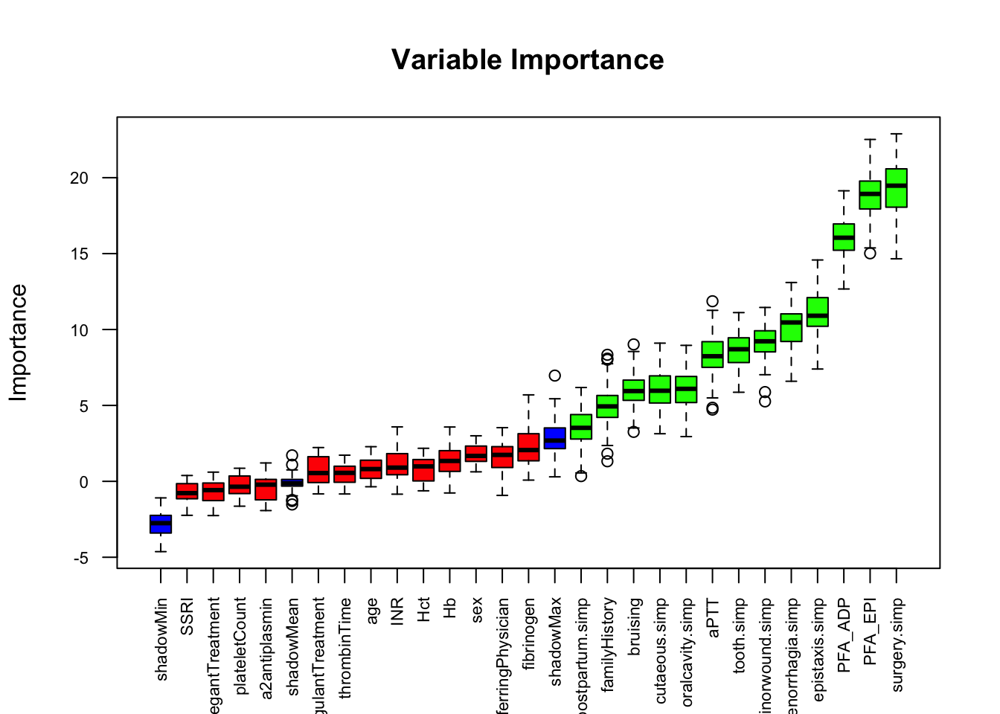

ble.tr <- readRDS("TrainingsSet.RDS")1 Feature selection
1.1 Introduction
In this chapter the feature selection for the MBD Check Algorithm is described. First a focus group decided on the most relevant predictors that are reasonably available in the preoperative setting. Then the Boruta algorithm was used to select the most significant predictors (Kursa and Rudnicki 2010). Results can be seen in Figure 1.1 and the imporatance of significant predictors in the first table.
1.2 Data loading & imputation
The trainings data is loaded for feature importance calculation.
Loading required libraries:
library(Boruta) # Boruta algorithm
library(ggplot2) # Visualization
library(missForest) # Imputation
library(DT)Since the Boruta algorithm can not handle incomplete data, the data set is imputed.
set.seed(123213)
imputation.res <- missForest(ble.tr)
ble.tr.imp <- imputation.res$ximp
print(imputation.res$OOBerror) NRMSE PFC
0.3410852 0.1201472 1.3 Feature selection
All variables that are not reasonably available at preoperative screening are removed.
set.seed(12312)
boruta_output <- Boruta(mbd ~ ., data= ble.tr.imp
[,-c(26,9,10,11,12,15,16,17,19,20:22,28,33,42,43,44)],
doTrace=0)
plot(boruta_output, cex.axis=.7, las=2, xlab="", main="Variable Importance")
Table of the significant predictors:
boruta_signif <- getSelectedAttributes(boruta_output, withTentative = TRUE)
roughFixMod <- TentativeRoughFix(boruta_output)
boruta_signif <- getSelectedAttributes(roughFixMod)
imps <- attStats(roughFixMod)
imps2 <- imps[imps$decision != 'Rejected', c('meanImp', 'decision')]
imps2$Predictor <- rownames(imps2)
imps2 <- imps2[,c(3,1,2)]
imps2$meanImp <- round(as.numeric(imps2$meanImp),2)
colnames(imps2) <- c("Predictor", "Mean importance", "Decision")
datatable(imps2, rownames = FALSE, options = list(order = list(1,"desc")))1.4 Final predictors
The final predictors that were selected were: PFA-EPI, Simplified ISTH-BAT: Surgery, PFA-ADP, Simplified ISTH-BAT: Menorrhagia, Simplified ISTH-BAT: Epistaxis, Simplified ISTH-BAT: Minor wounds, Simplified ISTH-BAT: Tooth extraction, aPTT, Simplified ISTH-BAT: Cutaneous bleedings, Simplified ISTH-BAT: Oral cavity bleedings, and Simplified ISTH-BAT: Post-partum hemorrhage.
Kursa, Miron B., and Witold R. Rudnicki. 2010. “Feature Selection with the Boruta Package.” Journal of Statistical Software 36 (September): 1–13. https://doi.org/10.18637/jss.v036.i11.